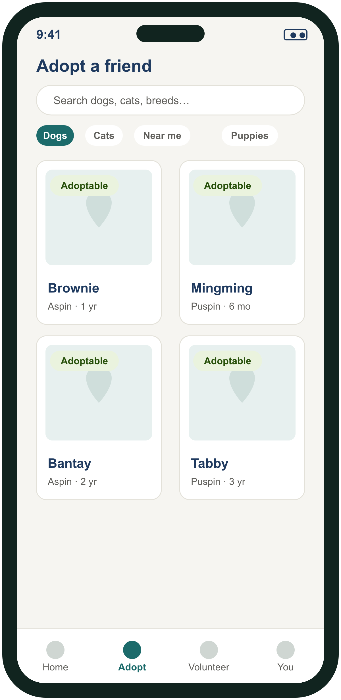
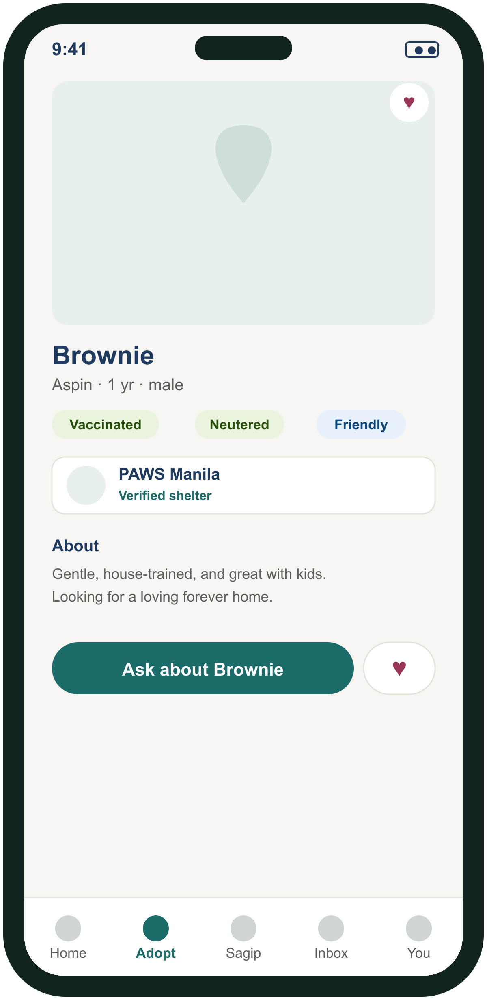
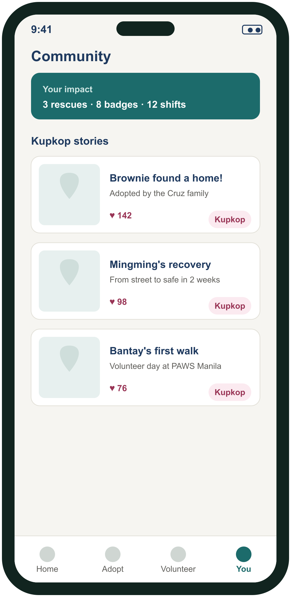

Adopt a rescue, report a stray, give through Abot-tulong, and lend a hand with Kawang-Gawa volunteering — all in one app. Ready to do more? Become a verified rescuer. (Services marketplace & AI-assisted features come in Phase 2.)
Map-based stray reports, real-time alerts to nearby rescuers, a claim flow that prevents duplicate efforts, and a full status history from pickup to recovery.
Browse rescues ready for a home, send inquiries, and complete adoptions — with rescued animals flowing straight into adoption listings.
Give directly to shelters through GCash or Maya QR. Funds go straight to them — Kupkop PH never holds or routes money.
More than walks — shelters post volunteer shifts (dog walking, feeding & care, visitor assistance, events, facility help, transport); you sign up, sign a waiver, and get confirmed.
Report a missing or found pet and let smart matching surface likely reunions nearby, by location and description.
Share rescue stories, track your impact over time, and earn badges as you help — community that keeps people coming back.
Real-time messaging ties every rescue, adoption, and volunteer shift together so the people involved can coordinate without leaving the app.
Push alerts for nearby rescues, claim updates, adoption replies, and volunteer reminders — tuned so they’re useful, not noisy.
Shelters publish exactly what they need — food, meds, supplies — so support goes where it actually counts.
Browse rescues ready for a home, meet them, and message the shelter — all in one place.



Design previews — the app is in development and screens may change.
A services marketplace (vets, groomers, sitters) and AI-assisted features — smart matching and more — build on top of the Sagip foundation.
Join the waitlistKupkop PH has a dedicated experience for shelters, pounds, and rescue orgs — listings, volunteer coordination, and direct QR donations.
See Kupkop PH for shelters →